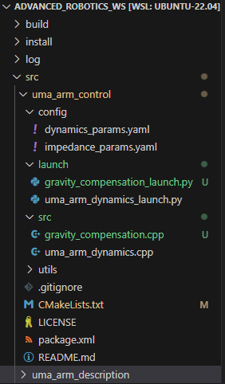
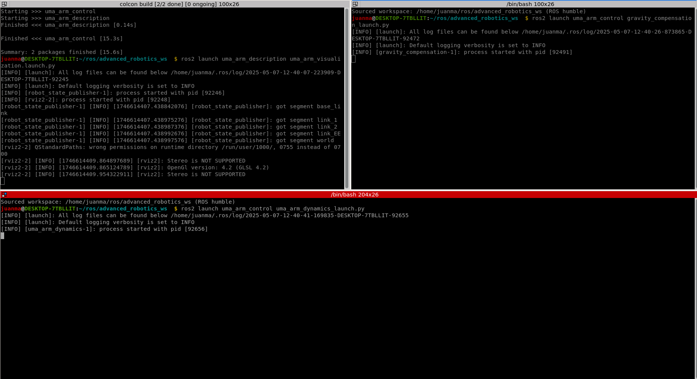
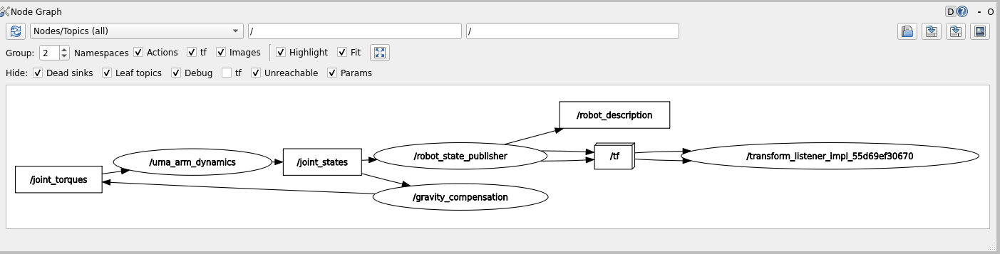
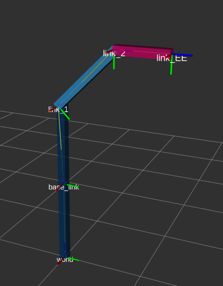
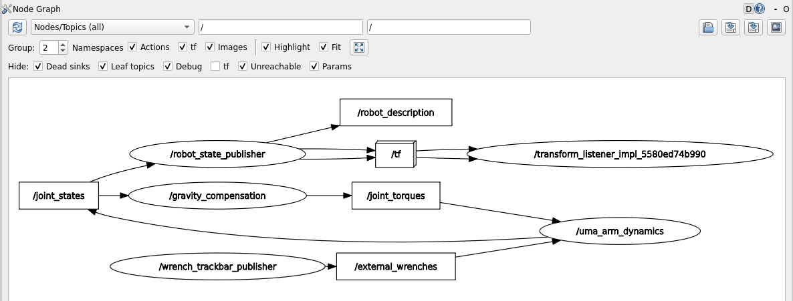

Lab Session 3: Inverse Dynamics Control¶
In this lab session you will learn how to implement inverse dynamics controllers to compensate the non-linear dynamics of the manipulator to let you impose a specific desired dynamic behavior of the manipulator. Note that you are expected to have finished the previous lab session as you'll need that implementation.
3.1. Gravity compensation¶
3.1.1. Implementation¶
As you could have noticed in the previous lab, the gravitational effects on the manipulator makes it to "fall". Hence, out controller should include these effects when computing the joint torques that will be commanded to the actuators. The simplest inverse dynamics controller is the gravity compensation controller that set the torques of the actuators to be equal to those produced by gravity
To implement the gravity compensation controller you need to do the following:
-
Create the gravity compensation node:
gravity_compensation.cppShow the code
gravity_compensation.cpp/* Author: Juan M. Gandarias (http://jmgandarias.com) email: jmgandarias@uma.es This script calculates the torque to cancellate the gracvity dynamic effects tau = g(q) Inputs: desired_joint_accelerations, joint_state(joint_positions, joint_velocities) Output: joint_torques */ #include <rclcpp/rclcpp.hpp> #include <sensor_msgs/msg/joint_state.hpp> #include <std_msgs/msg/float64_multi_array.hpp> #include <chrono> #include <Eigen/Dense> #include <cmath> class DynamicsCancellationNode : public rclcpp::Node { public: DynamicsCancellationNode() : Node("gravity_compensation_node"), joint_positions_(Eigen::VectorXd::Zero(2)), joint_torques_(Eigen::VectorXd::Zero(2)) { // Frequency initialization this->declare_parameter<double>("frequency", 1000.0); // Dynamics parameters initialization this->declare_parameter<double>("m2", 1.0); this->declare_parameter<double>("m1", 1.0); this->declare_parameter<double>("l1", 1.0); this->declare_parameter<double>("l2", 1.0); this->declare_parameter<double>("b1", 1.0); this->declare_parameter<double>("b2", 1.0); this->declare_parameter<double>("g", 9.81); this->declare_parameter<std::vector<double>>("q0", {0, 0}); // Get frequency [Hz] parameter and compute period [s] double frequency = this->get_parameter("frequency").as_double(); // Get dynamic parameters m1_ = this->get_parameter("m1").as_double(); m2_ = this->get_parameter("m2").as_double(); l1_ = this->get_parameter("l1").as_double(); l2_ = this->get_parameter("l2").as_double(); g_ = this->get_parameter("g").as_double(); b1_ = this->get_parameter("b1").as_double(); b2_ = this->get_parameter("b2").as_double(); // Set initial joint state joint_positions_ = Eigen::VectorXd::Map(this->get_parameter("q0").as_double_array().data(), 2); // Create subscription to joint_torques subscription_joint_states_ = this->create_subscription<sensor_msgs::msg::JointState>( "joint_states", 1, std::bind(&DynamicsCancellationNode::joint_states_callback, this, std::placeholders::_1)); // Create publishers for joint torque publisher_joint_torques_ = this->create_publisher<std_msgs::msg::Float64MultiArray>("joint_torques", 1); // Set the timer callback at a period (in milliseconds, multiply it by 1000) timer_ = this->create_wall_timer( std::chrono::milliseconds(static_cast<int>(1000 / frequency)), std::bind(&DynamicsCancellationNode::timer_callback, this)); } // Timer callback - when there is a timer callback, computes the new joint acceleration, velocity and position and publishes them void timer_callback() { // Calculate torque to cancel the dynamic effects joint_torques_ = gravity_compensation(); // Publish data publish_data(); } private: // joint_states subscription callback - when a new message arrives, updates the dynamics cancellation and publishes teh joint_torques_ void joint_states_callback(const sensor_msgs::msg::JointState::SharedPtr msg) { // Assuming the joint names are "joint_1" and "joint_2" auto joint1_index = std::find(msg->name.begin(), msg->name.end(), "joint_1") - msg->name.begin(); auto joint2_index = std::find(msg->name.begin(), msg->name.end(), "joint_2") - msg->name.begin(); if (static_cast<std::vector<std::string>::size_type>(joint1_index) < msg->name.size() && static_cast<std::vector<std::string>::size_type>(joint2_index) < msg->name.size()) { joint_positions_(0) = msg->position[joint1_index]; joint_positions_(1) = msg->position[joint2_index]; } } // Method to calculate the desired joint torques Eigen::VectorXd gravity_compensation() { // Placeholder for calculate the commanded torques // Calculate the control torque to compensate only for gravity effects: tau = g(q) // Calculate g_vect // // Calculate desired torque Eigen::VectorXd torque(2); torque << 0, 0; return torque; } // Method to publish the joint data void publish_data() { // publish joint torque auto joint_torques_msg = std_msgs::msg::Float64MultiArray(); joint_torques_msg.data.assign(joint_torques_.data(), joint_torques_.data() + joint_torques_.size()); publisher_joint_torques_->publish(joint_torques_msg); } // Member variables // Publishers and subscribers rclcpp::Subscription<sensor_msgs::msg::JointState>::SharedPtr subscription_joint_states_; rclcpp::Publisher<std_msgs::msg::Float64MultiArray>::SharedPtr publisher_joint_torques_; rclcpp::TimerBase::SharedPtr timer_; // Joint variables Eigen::VectorXd joint_positions_; Eigen::VectorXd joint_torques_; // dynamic parameters variables double m1_; double m2_; double l1_; double l2_; double b1_; double b2_; double g_; }; int main(int argc, char *argv[]) { rclcpp::init(argc, argv); auto node = std::make_shared<DynamicsCancellationNode>(); rclcpp::spin(node); rclcpp::shutdown(); return 0; } -
You need to program the method
gravity_compensation()to calculate de desired torques.// Method to calculate the desired joint torques Eigen::VectorXd gravity_compensation() { // Placeholder for calculate the commanded torques // Calculate the control torque to compensate only for gravity effects: tau = g(q) // Calculate g_vect // // Calculate desired torque Eigen::VectorXd torque(2); torque << 0, 0; return torque; } - Create the
gravity_compensation_launch.pyfile (you need to do this in order to get the dynamic pameters from the config file). You don't need to do any modification in this file, just include it inside the launch folder.Show the code
gravity_compensation_launch.pyimport os from launch import LaunchDescription from launch_ros.actions import Node from ament_index_python.packages import get_package_share_directory def generate_launch_description(): config = os.path.join( get_package_share_directory('uma_arm_control'), 'config', 'dynamics_params.yaml' ) gravity_compensation_node = Node( package='uma_arm_control', executable='gravity_compensation', name='gravity_compensation', output='screen', parameters=[config] ) return LaunchDescription([gravity_compensation_node]) - Modify the
CMakeLists.txtto include the new nodeShow the code
CMakeLists.txt# Author: Juan M. Gandarias (http://jmgandarias.com) # email: jmgandarias@uma.es cmake_minimum_required(VERSION 3.8) project(uma_arm_control) if(CMAKE_COMPILER_IS_GNUCXX OR CMAKE_CXX_COMPILER_ID MATCHES "Clang") add_compile_options(-Wall -Wextra -Wpedantic) endif() # find dependencies find_package(ament_cmake REQUIRED) find_package(rclcpp REQUIRED) find_package(std_msgs REQUIRED) find_package(geometry_msgs REQUIRED) find_package(sensor_msgs REQUIRED) find_package(Eigen3 REQUIRED) include_directories(${EIGEN3_INCLUDE_DIR}) ## COMPILE add_executable(uma_arm_dynamics src/uma_arm_dynamics.cpp) add_executable(gravity_compensation src/gravity_compensation.cpp) ament_target_dependencies(uma_arm_dynamics rclcpp std_msgs sensor_msgs geometry_msgs Eigen3 ) ament_target_dependencies(gravity_compensation rclcpp std_msgs sensor_msgs Eigen3 ) if(BUILD_TESTING) find_package(ament_lint_auto REQUIRED) # the following line skips the linter which checks for copyrights # comment the line when a copyright and license is added to all source files set(ament_cmake_copyright_FOUND TRUE) # the following line skips cpplint (only works in a git repo) # comment the line when this package is in a git repo and when # a copyright and license is added to all source files set(ament_cmake_cpplint_FOUND TRUE) ament_lint_auto_find_test_dependencies() endif() install(TARGETS uma_arm_dynamics gravity_compensation DESTINATION lib/${PROJECT_NAME} ) install(DIRECTORY launch config DESTINATION share/${PROJECT_NAME}/ ) ament_package() -
Once you have done this, the uma_arm_control package should look like this:

-
Now, you can compile the workspace
3.1.2. Launch the controller¶
To launch the controller you'll need to do the following:
- Open one terminal and launch the uma_arm_visualization.
- Open another terminal and launch the controller.
- Open another terminal and launch the dynamics model

If you run the rqt_graph you should see how the gravity compensation node is getting the joint_state and feeding the manipulator with the computed torques

As a result, now the manipulator stays in the initial position defined by \(\mathbf{q}_0 = [45^o, -45^o]\) (note that the initial position is defined by q0 in the dynamics_params.yamlconfig file).

3.1.3. Simulating the force sensor¶
As we don't have a proper simulator where we could attach a simulated F/T sensor to the robot EE and apply forces against virtual objects, what we can do is to virtually apply forces to the EE of the robot. We can do this because, in the previous lab, we inmplemented considered the dynamics effects of external wrenches applied to the EE in the robot dynamics model.
Hence, we can simulate an F/T sensor with a node that publishes virtual wrenches. To do this, you can use the wrench_trackbar_publisher.py utility included in the uma_control package.
Show the code
import rclpy
from rclpy.node import Node
from geometry_msgs.msg import Wrench
import tkinter as tk
from threading import Thread
import time
class WrenchTrackbarPublisher(Node):
def __init__(self):
super().__init__('wrench_trackbar_publisher')
self.publisher_ = self.create_publisher(Wrench, 'external_wrenches', 10)
self.force_x = 0.0
self.force_y = 0.0
self.force_z = 0.0
self.torque_x = 0.0
self.torque_y = 0.0
self.torque_z = 0.0
self.continuous_mode = True
self.root = tk.Tk()
self.root.title("Wrench Publisher")
self.create_trackbar('Force X', -30.0, 30.0, self.update_force_x)
self.create_trackbar('Force Y', -30.0, 30.0, self.update_force_y)
self.create_trackbar('Force Z', -30.0, 30.0, self.update_force_z)
self.create_trackbar('Torque X', -10.0, 10.0, self.update_torque_x)
self.create_trackbar('Torque Y', -10.0, 10.0, self.update_torque_y)
self.create_trackbar('Torque Z', -10.0, 10.0, self.update_torque_z)
self.mode_button = tk.Button(self.root, text="Switch to Instantaneous Mode", command=self.switch_mode)
self.mode_button.pack()
center_button = tk.Button(self.root, text="Center All", command=self.center_all)
center_button.pack()
# Start the publishing thread
self.publish_thread = Thread(target=self.publish_wrench_continuously)
self.publish_thread.start()
def create_trackbar(self, label, min_val, max_val, callback):
frame = tk.Frame(self.root)
frame.pack()
tk.Label(frame, text=f"{min_val}").pack(side=tk.LEFT)
trackbar = tk.Scale(frame, label=label, from_=min_val, to=max_val, orient=tk.HORIZONTAL, command=callback, resolution=0.1, length=400, sliderlength=30)
trackbar.pack(side=tk.LEFT)
trackbar.bind("<ButtonRelease-1>", lambda event, lbl=label: self.reset_slider(lbl))
tk.Label(frame, text=f"{max_val}").pack(side=tk.LEFT)
def update_force_x(self, value):
self.force_x = float(value)
def update_force_y(self, value):
self.force_y = float(value)
def update_force_z(self, value):
self.force_z = float(value)
def update_torque_x(self, value):
self.torque_x = float(value)
def update_torque_y(self, value):
self.torque_y = float(value)
def update_torque_z(self, value):
self.torque_z = float(value)
def reset_slider(self, label):
if not self.continuous_mode:
for widget in self.root.winfo_children():
if isinstance(widget, tk.Frame):
for child in widget.winfo_children():
if isinstance(child, tk.Scale) and child.cget("label") == label:
child.set(0.0)
def switch_mode(self):
self.continuous_mode = not self.continuous_mode
mode_text = "Switch to Continuous Mode" if not self.continuous_mode else "Switch to Instantaneous Mode"
self.mode_button.config(text=mode_text)
def center_all(self):
for widget in self.root.winfo_children():
if isinstance(widget, tk.Frame):
for child in widget.winfo_children():
if isinstance(child, tk.Scale):
child.set(0.0)
def publish_wrench_continuously(self):
while rclpy.ok():
msg = Wrench()
msg.force.x = self.force_x
msg.force.y = self.force_y
msg.force.z = self.force_z
msg.torque.x = self.torque_x
msg.torque.y = self.torque_y
msg.torque.z = self.torque_z
self.publisher_.publish(msg)
time.sleep(0.001) # Sleep for 1 millisecond (1 kHz frequency)
def run(self):
self.root.mainloop()
def main(args=None):
rclpy.init(args=args)
node = WrenchTrackbarPublisher()
try:
node.run()
except KeyboardInterrupt:
pass
finally:
node.destroy_node()
rclpy.shutdown()
if __name__ == '__main__':
main()
Note that you don't have to change anything in that script. You can run it by openning a terminal and running the following:
Once you have done this, you'll see a GUI that allows you to publish virtual forces and torques. Note that, as our robot has only 2 DoFs and the dynamics model considers only the 2D XY plane, only forces applied at the X and Y axes will have an effect on our robot. This GUI has two operation modes: The continuous mode and the instantaneuos mode. You can see how they work in this video:
Launch the dynamics model and the gravity compensation controller and apply virtual forces. Your rqt_graph should then look like this:

Question
What is the behavior of the robot when you apply virtual forces to the EE? Use videos and/or plots to support your answer.
3.2. Linearization by inverse dynamics control¶
3.2.1. Implementation¶
3.2.2. Expected results¶
3.3. Experiments¶
Question
What happens if the compensation dynamics model is not exactly the same as the manipulator dynamics?
- Try to change the masses
m1,m2and lengthsl1,l2of the links in thedynamics_params.yaml(gravity_compensation) file. What are the effects of having incorrent dynamics parameters when launching the gravity compensation controller? - Try the same for the dynamics cancellation. In this case, you can also change the parameters
b1andb2. What are the effects when launching the dynamics cancellation controller?